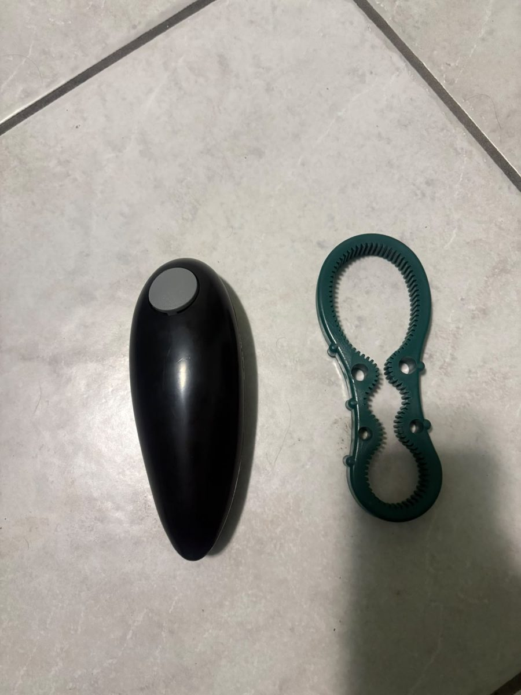
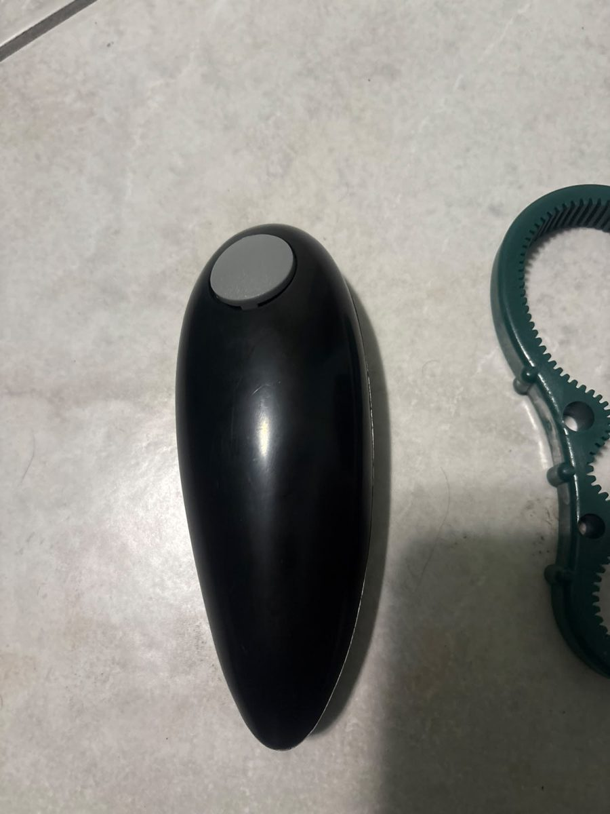
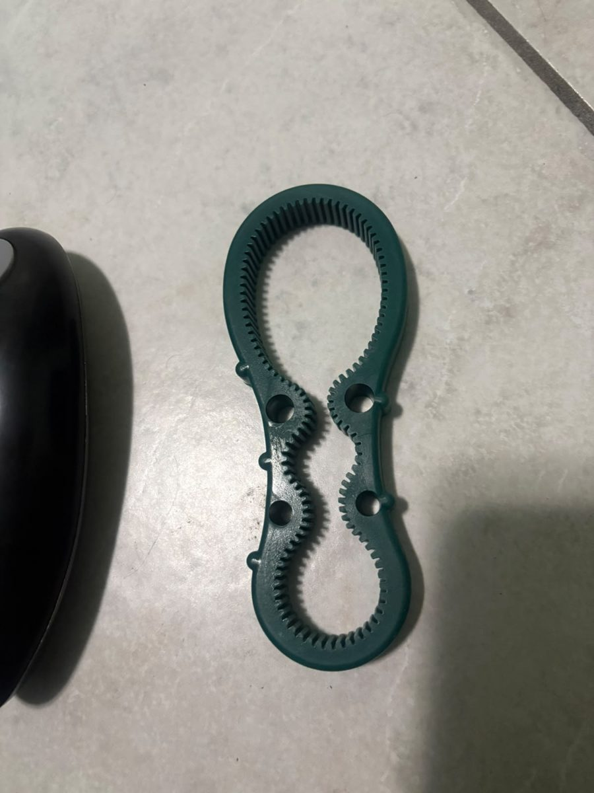
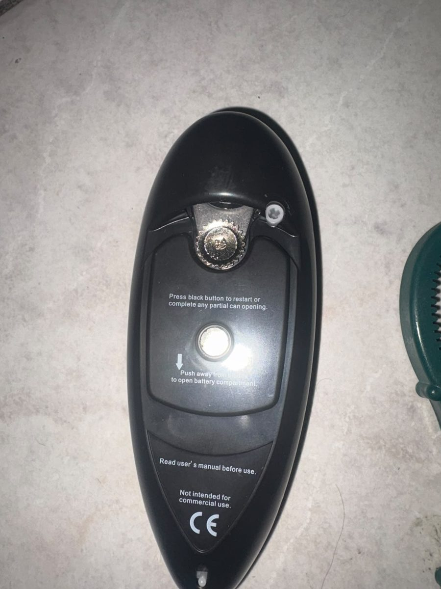

1
Apertura one-touch
Premi il pulsante e l'apriscatole fa tutto da solo: la lama taglia il bordo e si ferma a fine giro.
Kit cucina · Apri tutto con un tocco
Apriscatole elettrico one-touch e apribarattoli antiscivolo, insieme in un unico kit.




Trascina per ruotare
Due strumenti, zero fatica.
Premi il pulsante e l'apriscatole fa tutto da solo: la lama taglia il bordo e si ferma a fine giro.
Nessuna manovella da girare. Ideale per chi ha poca forza nelle mani o dolori articolari.
Taglia sotto il bordo del coperchio, lasciando un taglio più liscio rispetto ai modelli tradizionali.
Dentatura interna in gomma per fare presa su coperchi di tante misure, anche quelli più duri.
Forma ergonomica che sta in una mano e in qualsiasi cassetto. Funziona a batterie, senza fili.
Superfici lisce e senza fessure. Basta una passata con un panno umido.
Il vano batterie si apre facendo scorrere il coperchio sul retro. Controlla il manuale incluso per il tipo e il numero di batterie corretti.
È pensato per le normali scatolette con coperchio a bordo standard. Se il taglio resta a metà, premi di nuovo il pulsante nero per completare l'apertura.
Sì, è proprio uno dei casi d'uso principali: basta premere un pulsante. L'apribarattoli riduce molto lo sforzo di torsione.
Indicativamente 3–7 giorni lavorativi in Italia. I tempi esatti verranno confermati al checkout.
Sì, hai 14 giorni dalla consegna per esercitare il diritto di recesso, come previsto dal Codice del Consumo. Vedi la pagina Resi e recesso.
No, è destinato esclusivamente all'uso domestico (come indicato sul prodotto).